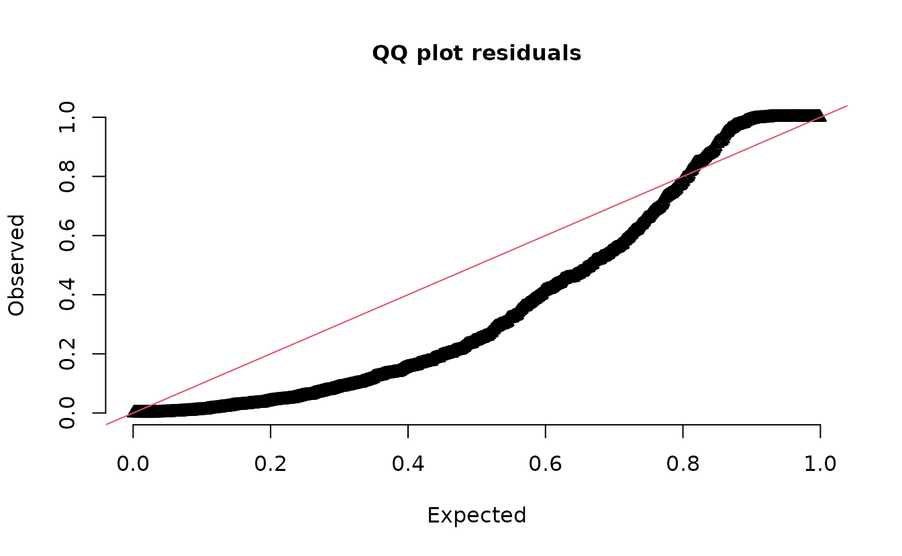
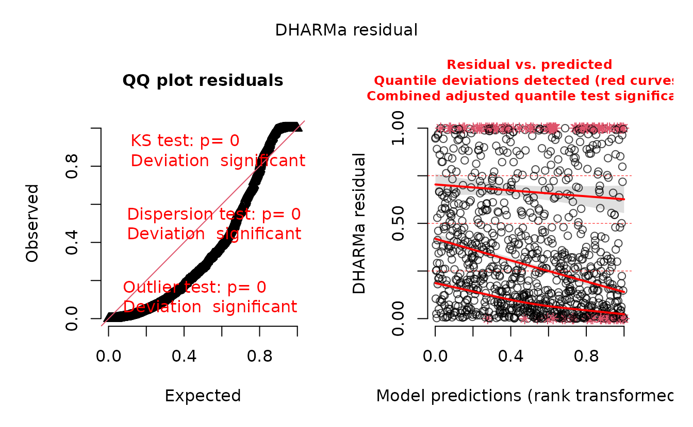
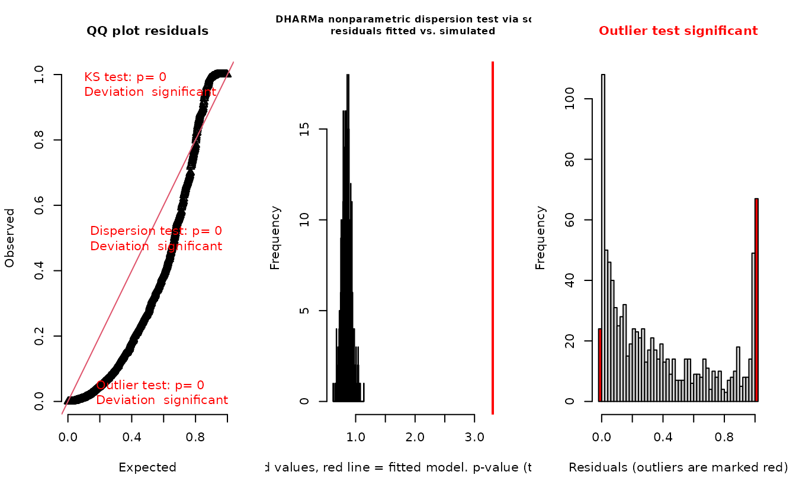
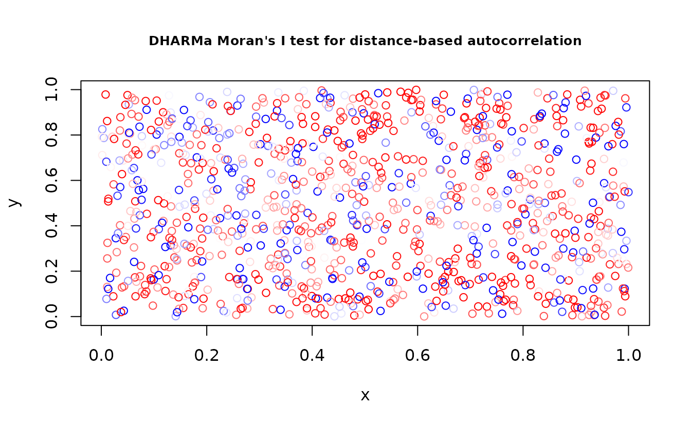
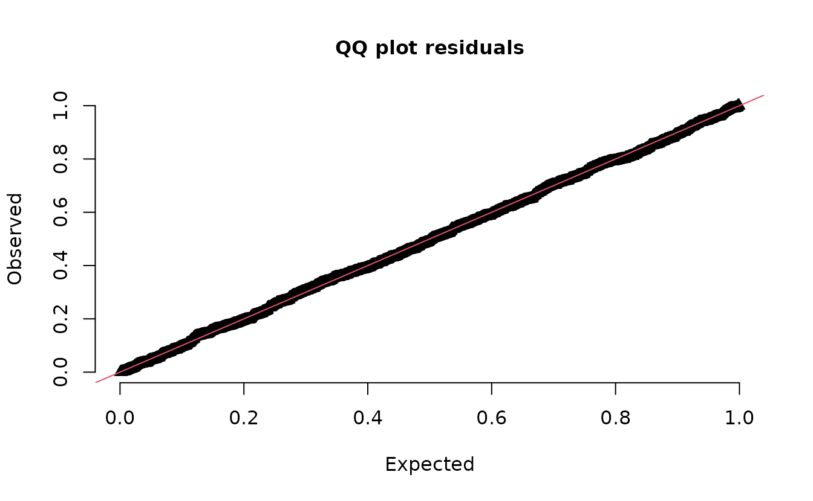
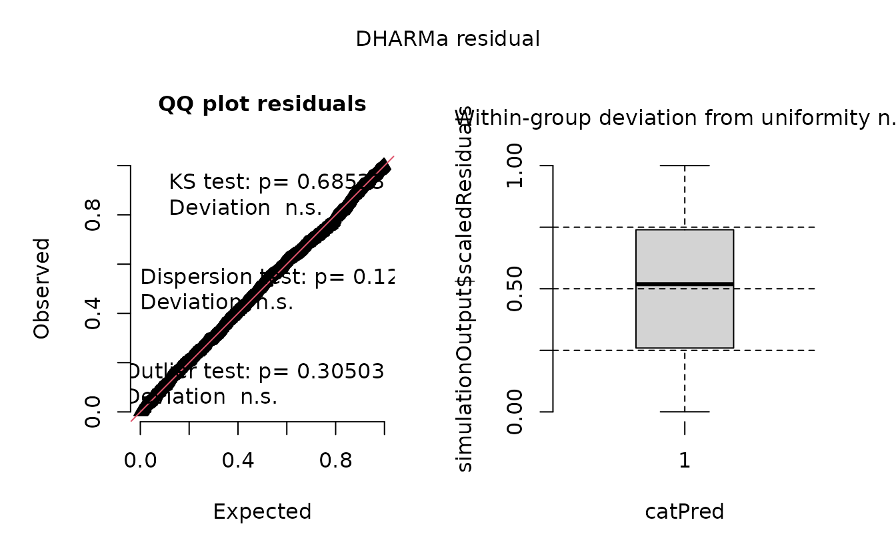
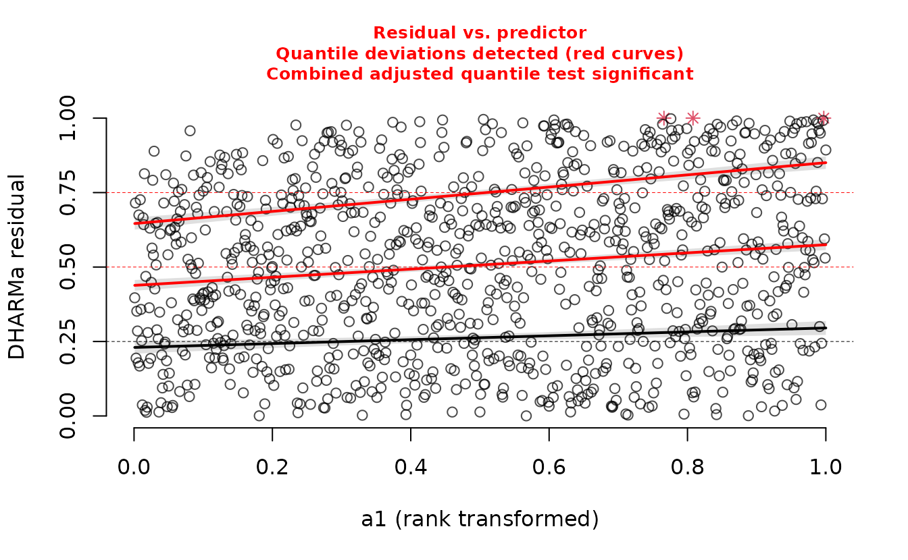

Residual checking with sdmTMB
Source:vignettes/web_only/residual-checking.Rmd
residual-checking.RmdIf the code in this vignette has not been evaluated, a rendered version is available on the documentation site under ‘Articles’.
We will start with some data simulated from scratch. We will simulate from an NB2 negative binomial observation model, a spatial random field, an intercept, and one predictor named ‘a1’ that will have a linear effect on the observed data.
set.seed(1)
predictor_dat <- data.frame(X = runif(1000), Y = runif(1000), a1 = rnorm(1000))
mesh <- make_mesh(predictor_dat, xy_cols = c("X", "Y"), cutoff = 0.1)
dat <- sdmTMB_simulate(
formula = ~ 1 + a1,
data = predictor_dat,
mesh = mesh,
family = nbinom2(link = "log"),
phi = 0.2,
range = 0.4,
sigma_O = 0.3,
seed = 1,
B = c(0.2, 0.5) # B0 = intercept, B1 = a1 slope
)Next, we will fit versions with various responses and predictors. The first model will use the Poisson instead of the NB2. The 2nd model will match the simulated data. The third model is missing the ‘a1’ predictor. We’ll use a PC prior on the Matérn parameters to aid in estimation.
pc <- pc_matern(range_gt = 0.1, sigma_lt = 1)
fit_pois <- sdmTMB(observed ~ 1 + a1, data = dat, family = poisson(), mesh = mesh,
priors = sdmTMBpriors(matern_s = pc))
fit_pois
#> Spatial model fit by ML ['sdmTMB']
#> Formula: observed ~ 1 + a1
#> Mesh: mesh (isotropic covariance)
#> Data: dat
#> Family: poisson(link = 'log')
#>
#> coef.est coef.se
#> (Intercept) -0.17 0.34
#> a1 0.65 0.02
#>
#> Matérn range: 0.13
#> Spatial SD: 2.40
#> ML criterion at convergence: 3187.274
#>
#> See ?tidy.sdmTMB to extract these values as a data frame.
fit_nb2 <- sdmTMB(observed ~ 1 + a1, data = dat, family = nbinom2(), mesh = mesh,
priors = sdmTMBpriors(matern_s = pc))
fit_nb2
#> Spatial model fit by ML ['sdmTMB']
#> Formula: observed ~ 1 + a1
#> Mesh: mesh (isotropic covariance)
#> Data: dat
#> Family: nbinom2(link = 'log')
#>
#> coef.est coef.se
#> (Intercept) 0.52 0.14
#> a1 0.59 0.08
#>
#> Dispersion parameter: 0.21
#> Matérn range: 0.20
#> Spatial SD: 0.51
#> ML criterion at convergence: 1542.780
#>
#> See ?tidy.sdmTMB to extract these values as a data frame.
fit_nb2_miss <- sdmTMB(observed ~ 1, data = dat, family = nbinom2(), mesh = mesh,
priors = sdmTMBpriors(matern_s = pc))
fit_nb2_miss
#> Spatial model fit by ML ['sdmTMB']
#> Formula: observed ~ 1
#> Mesh: mesh (isotropic covariance)
#> Data: dat
#> Family: nbinom2(link = 'log')
#>
#> coef.est coef.se
#> (Intercept) 0.63 0.15
#>
#> Dispersion parameter: 0.19
#> Matérn range: 0.15
#> Spatial SD: 0.75
#> ML criterion at convergence: 1572.703
#>
#> See ?tidy.sdmTMB to extract these values as a data frame.We can see just by looking at these fits that the Poisson model inflates the spatial random field standard deviation (SD) compared to the truth. The model missing the ‘a1’ predictor does so to a lesser degree.
Here are randomized quantile residuals at fixed effect MLEs (Maximum Likelihood Estimates) and random effects that maximize the log likelihood at estimated fixed effects:
rq_res <- residuals(fit_pois)
#> Note what used to be the default sdmTMB residuals (before version 0.4.3.9005)
#> are now `type = 'mle-eb'`. We recommend using the current default `'mle-mvn'`,
#> which takes one sample from the approximate posterior of the random effects or
#> `dharma_residuals()` using a similar approach.
rq_res <- rq_res[is.finite(rq_res)] # some Inf
qqnorm(rq_res);qqline(rq_res)
rq_res <- residuals(fit_nb2)
#> Note what used to be the default sdmTMB residuals (before version 0.4.3.9005)
#> are now `type = 'mle-eb'`. We recommend using the current default `'mle-mvn'`,
#> which takes one sample from the approximate posterior of the random effects or
#> `dharma_residuals()` using a similar approach.
qqnorm(rq_res);qqline(rq_res)These use the approach from Dunn and Smyth (1996). They are also
known as PIT (probability-integral-transform) residuals. They apply
randomization to integer response values, transform the residuals using
the distribution function (e.g., pnorm()), simulate from a
uniform distribution, and transform the samples such that they would be
Gaussian if consistent with the model. You can see the source code at https://github.com/pbs-assess/sdmTMB/blob/master/R/residuals.R
We can see here that there are likely issues with the Poisson model in the tails.
These types of residuals are known to have statistical issues for state-space models; even if the model is the ‘correct’ model, the QQ plot may appear to have problems (Thygesen et al. 2017).
One-step-ahead residuals (Thygesen et al. 2017) are one option to fix this problem (although slow to calculate). Another option is to take a draw from the posterior with MCMC (e.g., Rufener et al. 2021). Also see https://kaskr.github.io/adcomp/_book/Validation.html
Here we will draw MCMC predictions and calculate residuals. The fixed
effects will be fixed at their maximum likelihood estimates (MLE) and
the random effects will be sampled. We do this with the
sdmTMBextra::predict_mle_mcmc() function in the sdmTMBextra
package: https://github.com/pbs-assess/sdmTMBextra. We will only
take a single draw for speed:
set.seed(123)
samps <- sdmTMBextra::predict_mle_mcmc(fit_nb2, mcmc_iter = 201, mcmc_warmup = 200)
#>
#> SAMPLING FOR MODEL 'tmb_generic' NOW (CHAIN 1).
#> Chain 1:
#> Chain 1: Gradient evaluation took 0.000856 seconds
#> Chain 1: 1000 transitions using 10 leapfrog steps per transition would take 8.56 seconds.
#> Chain 1: Adjust your expectations accordingly!
#> Chain 1:
#> Chain 1:
#> Chain 1: Iteration: 1 / 201 [ 0%] (Warmup)
#> Chain 1: Iteration: 20 / 201 [ 9%] (Warmup)
#> Chain 1: Iteration: 40 / 201 [ 19%] (Warmup)
#> Chain 1: Iteration: 60 / 201 [ 29%] (Warmup)
#> Chain 1: Iteration: 80 / 201 [ 39%] (Warmup)
#> Chain 1: Iteration: 100 / 201 [ 49%] (Warmup)
#> Chain 1: Iteration: 120 / 201 [ 59%] (Warmup)
#> Chain 1: Iteration: 140 / 201 [ 69%] (Warmup)
#> Chain 1: Iteration: 160 / 201 [ 79%] (Warmup)
#> Chain 1: Iteration: 180 / 201 [ 89%] (Warmup)
#> Chain 1: Iteration: 200 / 201 [ 99%] (Warmup)
#> Chain 1: Iteration: 201 / 201 [100%] (Sampling)
#> Chain 1:
#> Chain 1: Elapsed Time: 2.315 seconds (Warm-up)
#> Chain 1: 0.014 seconds (Sampling)
#> Chain 1: 2.329 seconds (Total)
#> Chain 1:
mcmc_res <- residuals(fit_nb2, type = "mle-mcmc", mcmc_samples = samps)
qqnorm(mcmc_res);qqline(mcmc_res)We can see these look a bit better. Remember, this is the ‘correct’ model.
We can take simulations from the fitted model to use with simulation-based residuals:
s_pois <- simulate(fit_pois, nsim = 500, type = "mle-mvn")
s_nb2_miss <- simulate(fit_nb2_miss, nsim = 500, type = "mle-mvn")
s_nb2 <- simulate(fit_nb2, nsim = 500, type = "mle-mvn")These return a matrix where each row represents a row of data and each column is a simulation draw:
dim(s_pois)
#> [1] 1000 500Test whether fitted models are consistent with the observed number of zeros:
sum(dat$observed == 0) / length(dat$observed)
#> [1] 0.634
sum(s_pois == 0)/length(s_pois)
#> [1] 0.352376
sum(s_nb2 == 0)/length(s_nb2)
#> [1] 0.644674There are obviously too few zeros in the data simulated from the Poisson model.
Plot DHARMa residuals:
simulate(fit_pois, nsim = 300, type = "mle-mvn") |>
dharma_residuals(fit_pois)
We did that with the sdmTMBextra package https://github.com/pbs-assess/sdmTMBextra.
We could also do that manually, which lets us use other DHARMa tools:
# My reading of DHARMa documation is that the predicted response for the
# residuals vs. fitted plot should ideally not include the random effects:
pred_fixed <- fit_pois$family$linkinv(predict(fit_pois)$est_non_rf)
r_pois <- DHARMa::createDHARMa(
simulatedResponse = s_pois,
observedResponse = dat$observed,
fittedPredictedResponse = pred_fixed
)
plot(r_pois)
DHARMa::testResiduals(r_pois)
#> $uniformity
#>
#> Asymptotic one-sample Kolmogorov-Smirnov test
#>
#> data: simulationOutput$scaledResiduals
#> D = 0.23222, p-value < 2.2e-16
#> alternative hypothesis: two-sided
#>
#>
#> $dispersion
#>
#> DHARMa nonparametric dispersion test via sd of residuals fitted vs.
#> simulated
#>
#> data: simulationOutput
#> dispersion = 3.9022, p-value < 2.2e-16
#> alternative hypothesis: two.sided
#>
#>
#> $outliers
#>
#> DHARMa outlier test based on exact binomial test with approximate
#> expectations
#>
#> data: simulationOutput
#> outliers at both margin(s) = 127, observations = 1000, p-value <
#> 2.2e-16
#> alternative hypothesis: true probability of success is not equal to 0.003992016
#> 95 percent confidence interval:
#> 0.1069843 0.1492400
#> sample estimates:
#> frequency of outliers (expected: 0.00399201596806387 )
#> 0.127
#> $uniformity
#>
#> Asymptotic one-sample Kolmogorov-Smirnov test
#>
#> data: simulationOutput$scaledResiduals
#> D = 0.23222, p-value < 2.2e-16
#> alternative hypothesis: two-sided
#>
#>
#> $dispersion
#>
#> DHARMa nonparametric dispersion test via sd of residuals fitted vs.
#> simulated
#>
#> data: simulationOutput
#> dispersion = 3.9022, p-value < 2.2e-16
#> alternative hypothesis: two.sided
#>
#>
#> $outliers
#>
#> DHARMa outlier test based on exact binomial test with approximate
#> expectations
#>
#> data: simulationOutput
#> outliers at both margin(s) = 127, observations = 1000, p-value <
#> 2.2e-16
#> alternative hypothesis: true probability of success is not equal to 0.003992016
#> 95 percent confidence interval:
#> 0.1069843 0.1492400
#> sample estimates:
#> frequency of outliers (expected: 0.00399201596806387 )
#> 0.127
DHARMa::testSpatialAutocorrelation(r_pois, x = dat$X, y = dat$Y)
#>
#> DHARMa Moran's I test for distance-based autocorrelation
#>
#> data: r_pois
#> observed = 0.0020776, expected = -0.0010010, sd = 0.0026262, p-value =
#> 0.2411
#> alternative hypothesis: Distance-based autocorrelation
DHARMa::testZeroInflation(r_pois)#>
#> DHARMa zero-inflation test via comparison to expected zeros with
#> simulation under H0 = fitted model
#>
#> data: simulationOutput
#> ratioObsSim = 1.7992, p-value < 2.2e-16
#> alternative hypothesis: two.sidedIn the QQ residual plots we clearly see evidence of over dispersion compared to the Poisson. Note the values clumping near 1.0 on the observed axis and deviating downwards towards 0.0 observed. This is indicative of too many zeros and especially too many large values compared to the assumed Poisson distribution.
Lets try with the correct model:
simulate(fit_nb2, nsim = 300, type = "mle-mvn") |>
dharma_residuals(fit_nb2)
Everything looks fine. But, again, the MCMC-based residuals above are likely the best approach.
What about the model where we were missing a predictor?
pred_fixed <- fit_nb2_miss$family$linkinv(predict(fit_nb2_miss)$est_non_rf)
r_nb2_miss <- DHARMa::createDHARMa(
simulatedResponse = s_nb2_miss,
observedResponse = dat$observed,
fittedPredictedResponse = pred_fixed
)
plot(r_nb2_miss)
This looks fine so far, but the plot on the right represents simulated residuals against the prediction without the random effects, which here is just an intercept. Lets try plotting the residuals against the missing predictor:
DHARMa::plotResiduals(r_nb2_miss, form = dat$a1)
We can see a slight trend in the residuals against ‘a1’ since we have missed including it in the model.
We can also see the difference in the log likelihood or by using the
AIC() method:
# negative log likelihood is lower;
# i.e. log likelihood is higher, but we do have one more parameter
fit_nb2$model$objective
#> [1] 1542.78
#> attr(,"logarithm")
#> [1] TRUE
fit_nb2_miss$model$objective
#> [1] 1572.703
#> attr(,"logarithm")
#> [1] TRUE
AIC(fit_nb2_miss, fit_nb2) # AIC supports including the 'a1' predictor
#> df AIC
#> fit_nb2_miss 4 3153.407
#> fit_nb2 5 3095.560For help interpreting the DHARMa residual plots, see
vignette("DHARMa", package="DHARMa").
References
Dunn, P.K., and Smyth, G.K. 1996. Randomized Quantile Residuals. Journal of Computational and Graphical Statistics 5(3): 236–244.
Rufener, M.-C., Kristensen, K., Nielsen, J.R., and Bastardie, F. 2021. Bridging the gap between commercial fisheries and survey data to model the spatiotemporal dynamics of marine species. Ecological Applications In press: e02453.
Thygesen, U.H., Albertsen, C.M., Berg, C.W., Kristensen, K., and Nielsen, A. 2017. Validation of ecological state space models using the Laplace approximation. Environ Ecol Stat 24(2): 317–339.